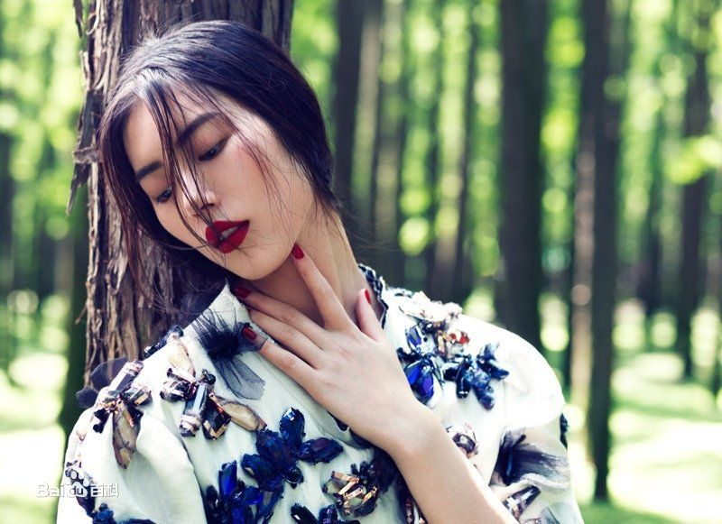

刘雯
刘雯，1988年1月27日出生，湖南永州人，国际超级模特。 2009年，作为第一个亚洲模特登上“维多利亚的秘密”内衣秀[1] 、[2] 。继2011年之后再度入榜男性网站ASKMEN评选出的2012年度全球最美的99人[3] 。2013年8月29日，在模特网站MDC top50 公布的榜单上位列第三[4] 。2014年7月26日，入选MDC “New Supers”全球新超模榜单，成为首位进入“New Supers”榜单的亚裔模特。[5] 2014年在福布斯公布的全球模特收入榜中，以700万美元与米兰达·可儿、凯特莫斯并列第三。[6]
2008年成为超A类模特，一月20多次拍摄，参加CHANEL、MARCJACOBS、宝格丽、LOEWE、伯爵、上海滩、杉杉等国内外知名服装品牌以及奥迪年会、DIOR派对等走秀；同年，走秀纽约、伦敦、米兰、巴黎时装周[8] ；同年3月，踏上米兰和巴黎时装周，在2008秋冬时装秀走秀Chanel、Jean Paul Gaultier 、Hermes、Burberry、Kenzo、Maison Martin Margiela 等20场；其中在巴黎走秀13场，米兰走秀7场，Trussardi闭场[7] 。
2009年，作为首个为“维多利亚的秘密”走秀的东亚模特出现在纽约T台[7] ； 2012年维多利亚的秘密内衣秀 2012年维多利亚的秘密内衣秀 同年春夏时装周中，刘雯首次登陆纽约时装周，并且取得27场秀的成绩；在巴黎走秀14场，米兰13场，登Chloe、Louis Vuitton、Robarto、Cavali、Alexander McQueen等大牌的秀场，为Anteprima闭场[7] ；同年2、3月的秋冬时装周上，刘雯走遍纽约、伦敦、米兰、巴黎共演出74场大秀，创造亚洲模特走秀场次纪录；登上Christian Dior、Gucci、Lavin 、Loewe等大牌的秀场；9月，第4次登陆四大国际时装周，共走秀74场，登上Prada、Celine、YSL的秀场，并为Babara Bui和RM by Roland Mouret两场秀担任开场模特[7] 。
